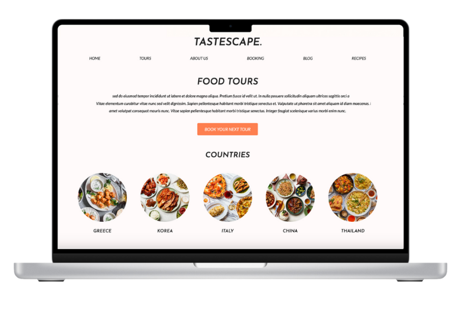

Healthcare App
2023
Creating a Safespace
The project was created as part of the HCI course at Stockholm University. The objective was to create a solution incorporating a digital platform that fulfills part of the UN’s Global Goals for Sustainable Development. Goal 3.7, universal access to sexual and reproductive care, family planning, and education was chosen by the team.
Overview
- My Role: I conducted research, interviews, and created artifacts such as blueprints, customer journey maps, business model canvases, storyboards, and presentations.
- Timeline: 10 days
- Team scope: 5 people, including 2 UX designers
- The focus became sexual healthcare for teenagers between 16-20 years old since Sweden's health center for teens (UMO) did not have a centralized online platform for their services at the time of creating this project.
The problem
- Through interviews with the target group, the team identified the following pain points:
- Accessibility: Teens outside urban areas struggle to reach distant health centers. A digital platform could bridge this gap, offering convenient access.
- Anonymity: Many users feel uncomfortable visiting physical health centers due to the risk of encountering acquaintances.
- Unreliable answers: The internet provides unreliable answers when the target group Google their symptoms.
- Response time: Slow responses from web forums causes user stress and frustration.
Methods & Testing
- Research: Online resources and direct interviews shaped our understanding of user needs and pain points.
- Data into Tools: We created three user personas and utilised blueprints and journey maps to transition from current user experiences to an envisioned future where user needs are fully addressed.
- Iterative Prototyping: We conducted iterative testing using both paper prototypes and figma with participants aged 15-20 by assigning them different tasks. This approach allowed us to gather valuable insights on how our target audience interacts with the app.
The Solution
The solution was to create a digital platform in form of an app that allows the target group to ask question in moderated forums, chat and video call with healthcare professionals for both physical and mental needs as well as read articles written by medical staff. This allows users to have access to UMO’s full scope of services anywhere and at anytime.
More like this
-



-
-